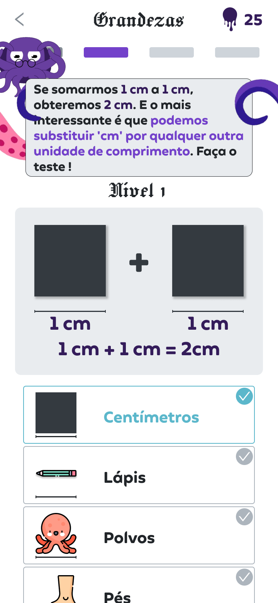

Olá, eu sou o Nicollas Andreas:)
Desenvolvedor de Software.
EXPERIENCES
Onde estive empregado
Colaborador / Hackathons e Projetos Acadêmicos
2019 - Presente (Remoto e Presencial)
Participação ativa na idealização e design UX/UI usando Figma e WordPress, trazendo soluções intuitivas e funcionais para projetos de faculdade e competições. Experiência em colaboração multidisciplinar e entrega de protótipos interativos.
Fullstack Developer Solo / Maxcon (PJ, Remoto)
Jan/2025 - Jul/2025
Desenvolvimento fullstack autônomo, criação de site em WordPress, automações com Python e construção de simuladores personalizados. Gerenciamento completo do ciclo de projetos, desde a concepção até a entrega e manutenção.
Skills Técnicas
Domínio em JavaScript, Python, HTML5, CSS3, banco de dados MySQL, além de design UX/UI com Figma e desenvolvimento rápido em WordPress. Experiência com design responsivo, automação e sistemas web funcionais.
SOBRE MIM
Um pouco sobre mim...
Nicollas Andreas, Estudante de Ciências da Computação & Desenvolvedor Fullstack
Apaixonado por tecnologia e design, estou mergulhado no mundo da programação e do desenvolvimento web. Com experiência prática em projetos acadêmicos, hackathons e no mercado, atuo como fullstack developer, criando soluções eficientes e interfaces intuitivas.
Minha especialidade vai de automações em Python e desenvolvimento com JavaScript até design UX/UI no Figma e sites em WordPress. Sempre buscando juntar lógica, criatividade e usabilidade para entregar produtos que fazem sentido.
Estudo profundamente cálculo, geometria analítica e psicologia aplicada para ampliar minha visão tecnológica e humana — porque tecnologia sem empatia não funciona.
Trabalho comtecnologia que transforma
Portfólio
Trabalhos e protótipos recentes

Aplicativo Educacional Infantil
Protótipo no Figma de um aplicativo voltado para crianças, cobrindo matérias gerais do ensino fundamental.
Tecnologias: Figma
Sistema de Estoque Financeiro
Sistema para controle de estoque com soma automática de valores e cálculo de custo final.